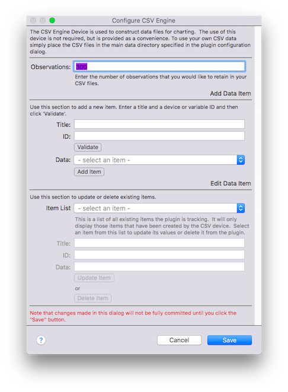
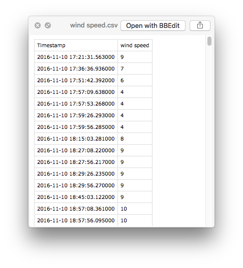
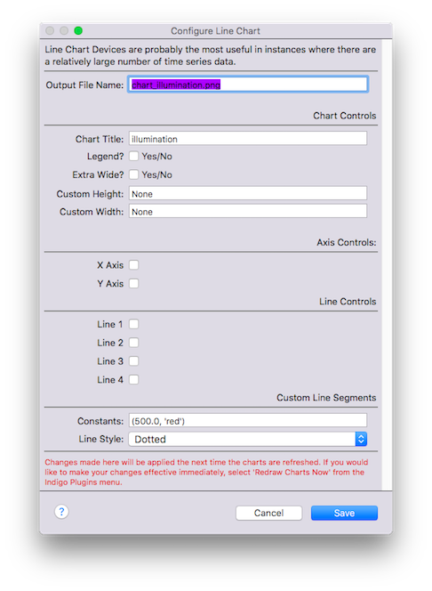
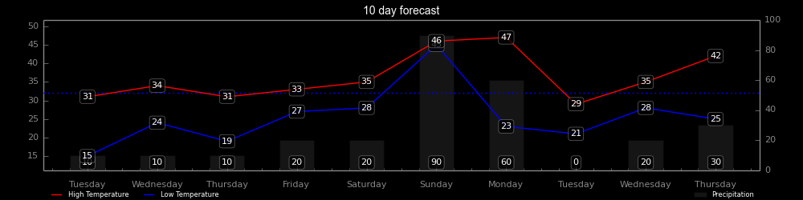
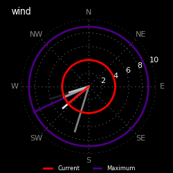

The Matplotlib plugin allows users to easily create attractive charts for display on Indigo Home Control Server control pages. The plugin also includes a facility to create necessary CSV data for display.
Highlights:
The Matplotlib plugin is designed to make creating visually appealing charts for Indigo control pages. Many of the chart attributes, such as background color, font styles and chart size can be managed centrally--for example, you can change the background color of all your charts simultaneously. You can add additional customizations to each individual chart if you like, such as overriding the default chart size or displaying a chart legend only on selected charts. The overriding emphasis in designing the plugin is simplicity. The instructions below seem like a lot, but almost all of the settings can be left as default when you begin. It's best to read through all these instructions before getting started.
Installation is easy. Download and extract the Indigo Plugin file onto your Indigo server machine. Double-click the plugin file and follow the prompts.
The plugin configuration dialog is the first place that you will land after you install the plugin for the first time. Chances are that you will be able to leave most of these settings alone when you begin. The configuration menu looks like this:
Presently, the plugin contains functionality for several charting system devices including:
CSV Data - Once you set and save your overall plugin settings, the next thing that you might want to do is generate some data for your charts. This is done using the plugin's built-in
CSV Data Engine device type. To establish your CSV Engine, create a new Indigo Device, select Matplotlib as the device type and CSV Engine as the device model.

For each data element, you must add three things:
To add your first data element, enter your title and device (or variable) ID and click the Validate button. After vailidation, the Data dropdown list will be populated with potential values to chart. Select your target value and click Add Item. You can repeat this process to add more data elements, but please note that things you add are not fully committed until you hit the save button. Use the second configuration area to modify or delete existing data elements. Again, changes will not be fully committed until you select save.
It is also possible to add your own CSV data files directly to the designated data folder (if the files are properly formatted, they will work just fine) but only CSV data generated by the plugin can be managed with the CSV Engine device. If you use your own files, you need to manage them some other way. If you choose to use the CSV Engine feature, you only need to create one CSV engine device for your entire installation. If you choose to add additional data elements, add them using the same procedure and add them to the same CSV Engine device. After you add your data elements, it will take some time for the chartable data to be generated. The first observation will be added the next time the plugin cycles (which is set in the plugin configuration dialog above). Each time the plugin cycles, it will first add a new observation to the data file and then it will build new charts (to ensure the most recent observations are included in the charts).
If you are successful, the plugin will generate CSV files like this:

Your First Plot - Once you have some data to chart, it's time to create your first plot. Plots are built using Matplotlib Plugin Charting Devices, and each plot is managed by its own
device instance. Create a new device and enter the configuration dialog. Most of these settings should be self explanatory, but one or two deserve additional explanation.

Some fields require a valid value or the word 'None'--if you set the value to None, the setting will be ignored. For example, a custom width value must either be a valid value in pixels or None. A blank will cause an error. If there's a problem, the plugin will try to fix the error for you. Other things can be blank -- like a title -- because entering 'None' will generate a title 'None'!
(123.4, 'blue'), (234.5, 'green')
There is one plugin action.
There are several plugin menu items.
Under construction.
com.fogbert.indigoplugin.matplotlibHere are a few examples of charts that were created with the plugin (the border around the outside of the image was added to show the boundary of the image for
this page).


The best way to request features and to report undocumented features (bugs) is via the Indigo Forums. An alternative is to send me a Private Message via the Indigo Forums—which is, in fact, the preferred way if your debug output contains sensitive information like your username, password and user email address. When reporting bugs, it’s best to include the following information:
I will do my best to help you use the plugin, but I can only commit to providing support for the plugin itself; I can't commit to providing support for difficulties accessing third-party resources, the accuracy of your data or other concerns external to the plugin. I would suggest that you post questions to the forum as other users may be able to help and so all can benefit from answers provided.